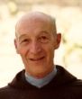

|
 Welcome to the Dunston Retreat Center. Whether you are planning to attend one of our many conferences or embarking on a private retreat, we're sure that you will enjoy your stay. Located in the northern woods of Wisconsin, the Dunston Retreat Center provides comfortable and attractive accommodations while you enjoy the rustic setting available just outside your door. The Retreat Center has 32 beds, large meeting rooms, a chapel, and kitchen facilities. If you want to get out, there are ample opportunities for hiking, canoeing and horseback riding in the surrounding area. Throughout the year the center staff conducts retreats to accommodate the needs of various groups. We offer retreats for men, for women, and for couples. Please call about special needs retreats. If you prefer, an individually directed retreat is possible. The retreat includes a time of daily sharing and guidance by a retreat director to supplement your private time of solitude and meditation. At the Dunston Retreat Center we make everything as easy as possible, providing meals, towels, bedding - everything you need. Just bring yourself. Benjamin Adams Director, Dunston Retreat Center |
||
|
Next week at the Dunston Retreat Center
The annual meeting of the Midwest Marriage Encounter occurs at the Dunston Retreat Center, June 11-13. Registration is $50 and includes room and board. A boating trip on Lake Superior is planned for Saturday night ($10 fee). |
A letter from one of our guests
I'm writing to tell you how much I enjoyed my retreat at Dunston. I came to your center haggard and worn out from a long illness and job difficulties. I left totally refreshed. I especially want to thank Father Thomas Holloway for his support. |
|
|
Upcoming Events
June 11-13 Marriage Encounter |
||